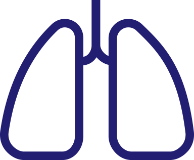

Never before have we had so many good, safe, oral and inhaled drugs for the treatment of asthma as we do today. Work with your physician to determine the optimum medication regimen for achieving control over your asthma.
Asthma medications are usually separated into specific categories, as follows:
Quick-relief medications are used to treat asthma symptoms or an asthma episode. They are generally not used on a daily basis, unless your asthma is not well controlled. If this is the case, speak with your physician.
Long-term control medications are used daily to maintain control of asthma symptoms. These medications are in different categories and can be used alone or in combination with others. They are to be taken every day, even when you are doing well, to prevent episodes.
There are a number of devices that help deliver inhaled lung medications directly to the airways: metered-dose inhalers, dry powder inhalers, and nebulizers
More information on Devices for Inhaled Medications
Along with asthma medications, alternative therapies may assist in managing asthma on a daily basis. Discuss these with your physician.
More on Alternative therapies.
Managing your medications is also an important task. You do not want to run out of medication or have too much lying around. Learning how to manage your medications will help with both of these things. Read the package insert and any corresponding paperwork from your pharmacy to learns tips that will help you manage your asthma medication supply.
More on managing your medications.
© 2015 Mount Sinai — National Jewish Health Respiratory Institute